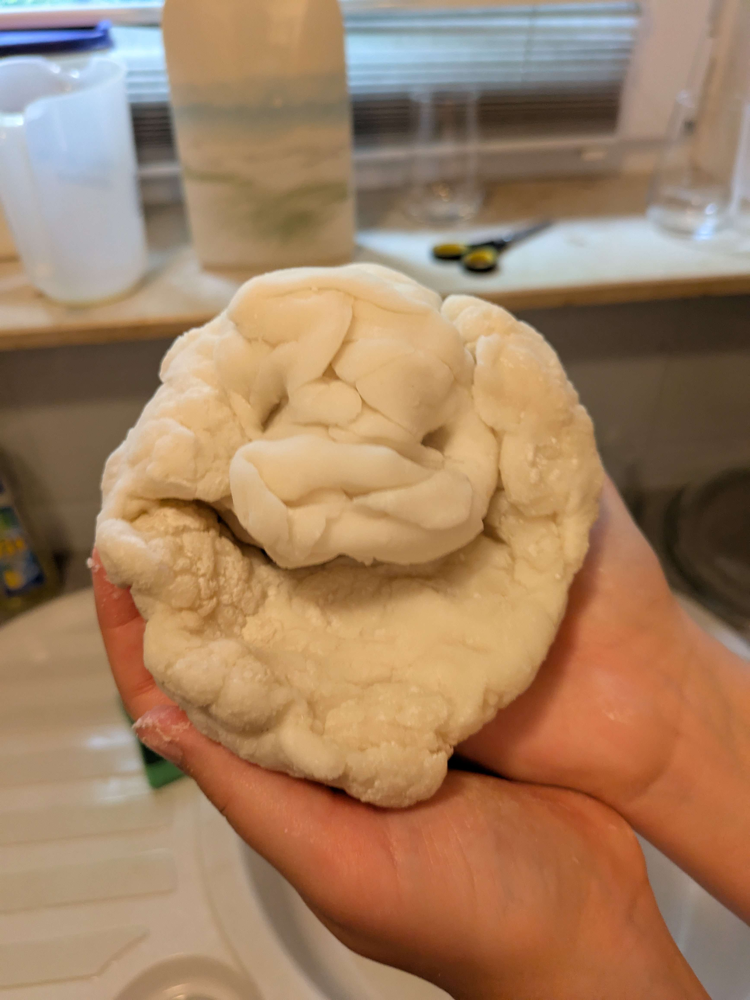
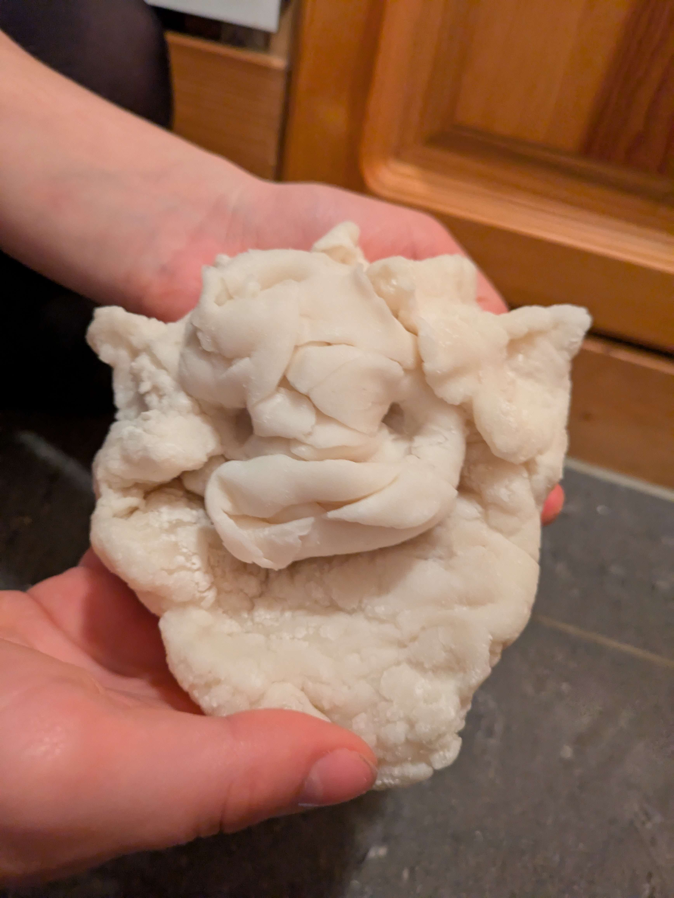
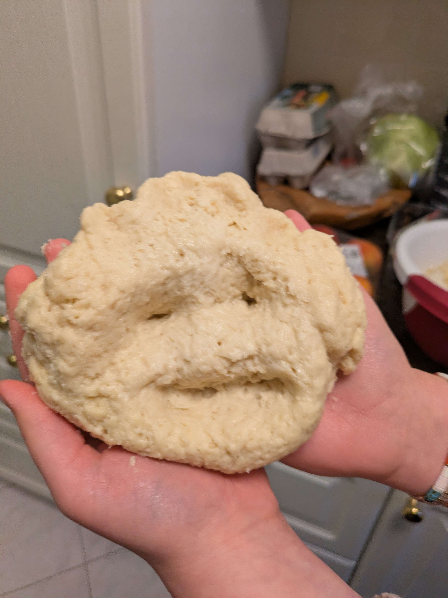
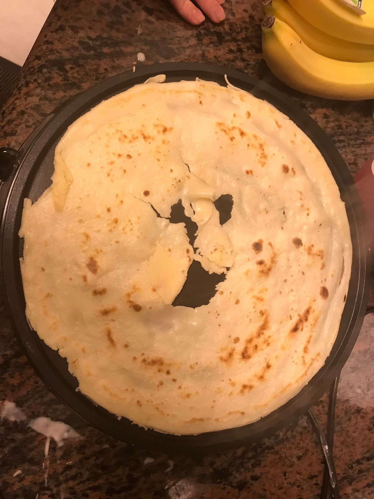

Ich weiss nicht, warum wir das immer gemacht haben, wenn wir was gebacken haben, aber irgendwie ist Hank zu einem running gag geworden.
Alle diese Manifestationen von Hank werden hier Dokumentiert und festgehalten!
Ich bin ehrlich, ich habe diese Page nur gemacht, um zu sagen, dass ich mal wieder was backen will mit dir und Alicia D:

Die erste Manifestation von Hank, geschaffen aus Mochiteig. Bisschen verstörender Blick, noch verstörender ist aber, dass das innere von Hank noch warm war...
Ich bin immer noch traurig es so schlecht geschmeckt hat.. naja.

Princess Hank, am selben Tag entstanden, wie OG Hank. Mindestens genau so creepy, wie OG Hank, auch mit dem super feature, dass er im inneren noch schön warm war...
Trotzdem, seine Krone macht ihn super pretty!

Der zweite Hank, bestehend aus Teig für Zimtschnecken! Diesmal hat er nicht gelächelt ich bin mir ehrlich nicht sicher, welchen von den beiden ersten Hanks ich am verstörendsten finde..
Dieser war auch nicht warm von innen! Ist gut I guess(?)

Ehrlich dieser Hank ist einfach nur cute. Obviously gab es keinen Hank aus dem rohem Crepeteig, weil.. war flüssig.
Auf dem Foto sieht einfach nur happy aus und freut sich da zu sein :D
Die Crepes waren sogar gut! Gewisse Crepes von gewissen Personen waren zwar besser als andere.. aber war fun!